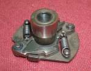
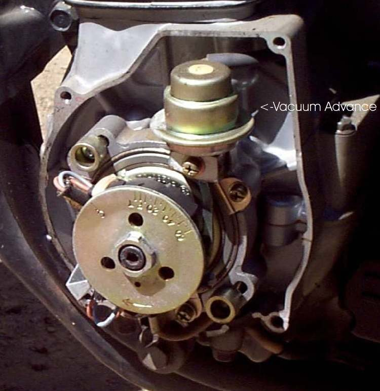
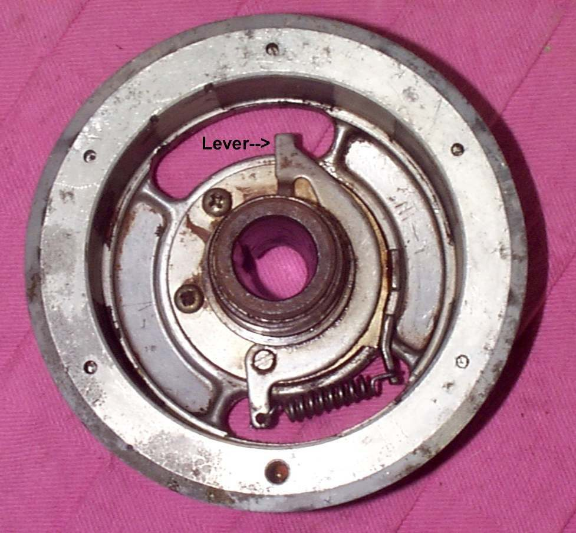

On points ignitions, the cam that opens the points often sits on a pair of spring-loaded weights. This is the automatic advance unit. It is usually on the end of the camshaft or crankshaft, behind the points plate. Newer bikes do the same job electronically, and some engines have fixed timing with no advance at all. A very few use a vacuum unit instead of weights.
What it does
Burning fuel takes time, and there is less time at high revs. As the engine speeds up, the weights swing out against their springs and turn the cam, so the spark comes earlier before top dead centre. Full advance is reached at a moderate engine speed on most engines. A retarded spark at rest also makes starting easier and helps stop kickback.
Signs it is worn or failing
- Timing that cannot be set the same way twice, or a rough idle with a dancing timing mark.
- Pinking or heat at high revs: advance stuck late or stuck early. See Ignition timing suspected wrong and Misfires only at high revs.
- Weights that stick, springs that are weak or broken, dry or rusted pivots.
- Slop in the cam, which gives a wandering timing mark.
When to replace it
Take off the points plate whenever points are changed and check that the weights move freely and snap back. Clean and lightly grease sticky pivots. Replace the unit if a spring is weak or broken, or the pivots and cam are worn.
What to match when buying
- The unit listed for your engine and its direction of rotation.
- Spring strength matters; do not mix springs from another model.
- Some are sold with the cam. Check which parts are included.
Fitting notes
- Check timing at full advance if the manual says so. You can check it with a timing light, or by holding the unit at full advance by hand or with the lever or locking hole the engine may provide.
- Retarded timing on an older engine is not safe to guess. Use the marks and values in your bike's manual.
- See Check spark advance and Check ignition timing.